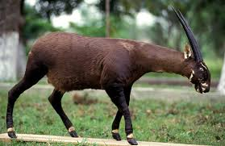
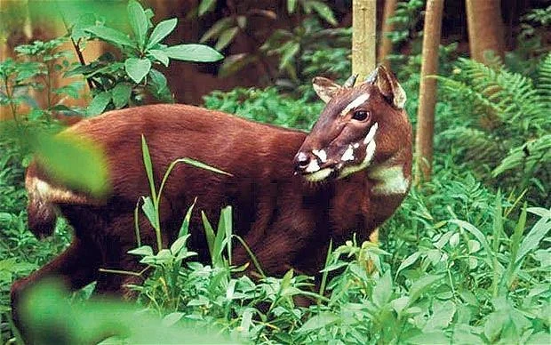
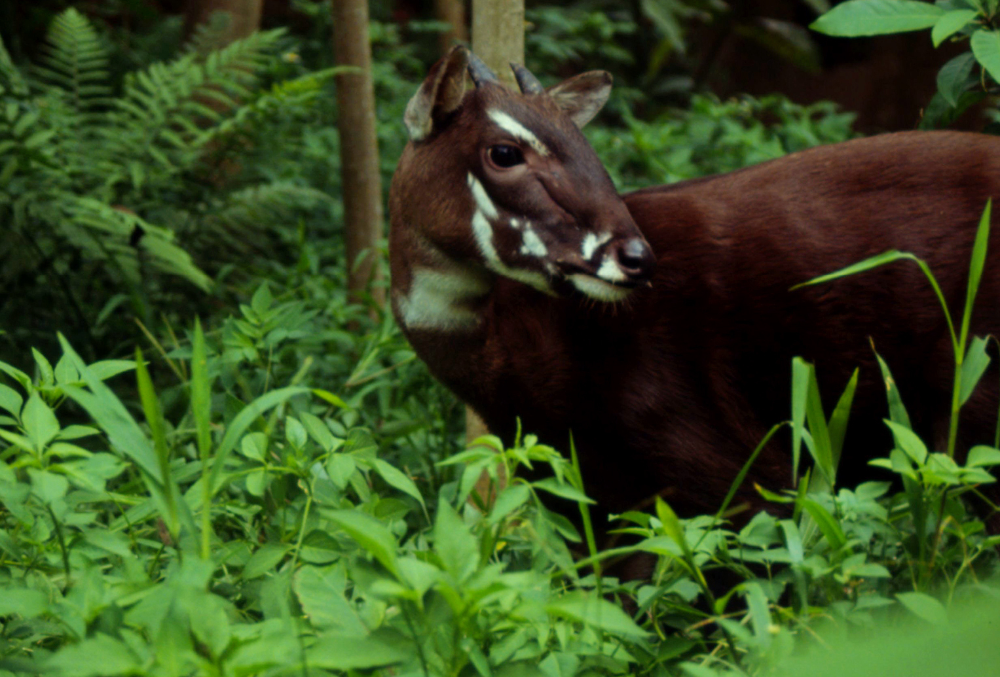

El **Saola** (*Pseudoryx nghetinhensis*), apodado el "unicornio asiático", es un bóvido raro y enigmático descubierto en 1992. Es endémico de las montañas Annamitas, en la frontera entre **Vietnam y Laos**. Se asemeja a un antílope y se caracteriza por dos largos cuernos paralelos y rectos que pueden alcanzar medio metro de largo, presentes tanto en machos como en hembras. El Saola está clasificado como **en peligro crítico de extinción** y es tan raro que no se ha registrado un avistamiento confirmado en estado salvaje desde 2013. Su población es desconocida, pero se estima que es muy pequeña. Sus principales amenazas son la caza indiscriminada con trampas de alambre, colocadas por cazadores furtivos dirigidos a otras especies, y la pérdida de su hábitat forestal.


